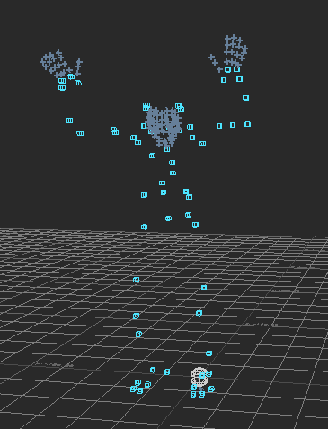
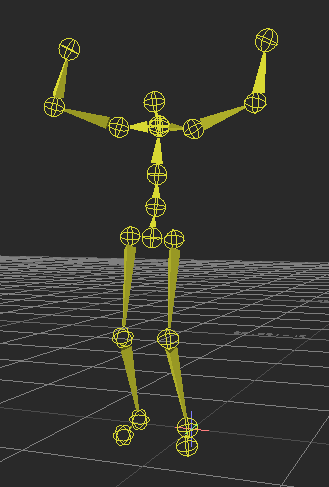

Importing C3D into Motion Builder
C3D is a binary format which stores animated 3D point data. Using Motion Builder, we can convert this point data to a format (BVH, in this case) which can be used to animate a digital character rigged with a skeleton. This process imports a set of C3D data into Motion Builder and then configures a biped character to fit this data.
|  |  |
| C3D example (3D points) |
BVH example (hierarchy of rotation data) |
To get started, add the path to your folder where the C3D data is stored in the AssetBrowser (with the second mouse button click in the navigator and choose the add favorite path option).
- Drag and drop the C3D file, Choose “C3D Options..” in the menu and select merge to make sure each is imported into its own take but uses the same C3D marker set.
- Add an ‘Actor’ to the scene (In the AssetBrowser, go to Templates/Characters. Drag and drop the actor onto the Viewer window.). Fit the ‘Actor’ to the C3D data by aligning the markers with the actor (this is best done with a T-Pose).
- In the navigator, select the Actor. Make sure the ‘Marker’ window shows in the tab window.
- Create a MarkerSet for this Actor. Drag the markers associated with each body part onto each body part. Using your mouse, select the group of markers and press and hold the “X” key and with the mouse drag and drop the group of the selected markers on the appropriate circle spot at the character scheme. Do that for all markers. You can use a max of 5 markers on one part of the body.
- Now click on the ACTIVE tick box. Hit the play button and check the character’s movement. The actor should now move with the C3D data. If you do not like how the actor mapped to the C3D, un-click ACTIVE and hit Edit/ResetAll to reset the actor pose. You can also click SNAP in the Actor settings panel to tweak the marker settings.
You can now import the rest of the C3D files. Each will go into its own take. Drag and drop the C3D file and select Import Options. From this dialog, select Merge and import the start/end from the file.
Mapping motions to a joint hierarchy
You can now import a model that is driven by this model. Drag and drop the model from the asset browser into the work view window and choose the merge option, with no animation. For example, import a biped bone_skeleton from the tutorial assets with merge, no animation.
Next, add a character to the scene. First, we map the biped bone_skeleton to the character by specifying the biped’s joints in the naming template window. As a shortcut, click on the Hip joint in the scene hierarchy, select all branches, and then drag the Hip join onto the hip joint in the naming template (all joints should get extracted).
Now we can link the character’s movement to the actor driven by C3D data. Click characterize and then in the character control window, select Actor Input. Specify the actor as the character’s input.
The process above also works for skinned models. Any input FBX can be loaded.
Exporting from Motion Builder
After we have mapped the motion to a joint hierarchy, we can export to numerous formats.
- Go to Animation/Plot All Properties.
- Go to scene and select the set of joints you wish to export. For example, click on the root, and then select all branches.
- A subset of joints can be selected for export (for example, if you don’t have animation for the face or hands, you can keep the exported file simpler and smaller by not selecting these joints. It is possible to save a desired joint set as a group, so they can be selected again later easily.)
- Make sure there are no spaces in hierarchy node names!
- Make sure to select all the bones you want to export!
- Go to File/Export Motion File
- Choose the format (ASF/AMC,BVH,FBX)